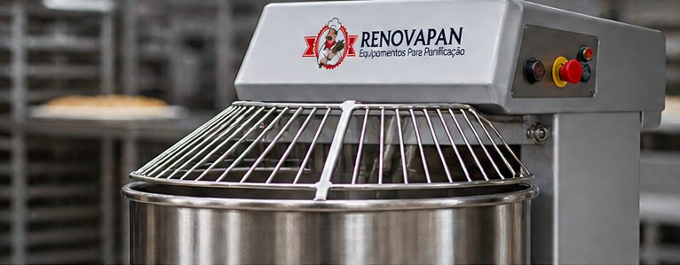

Reforma, recuperação e comercialização de
Equipamentos para panificação
Soluções completas para o seu negócio, com equipamentos recuperados, revisados e prontos para produção.

Imagem ilustrativaNossas linhas de equipamentos
Encontre o equipamento ideal para a sua produção.
Nosso processo de reforma e recuperação
Uma nova vida útil, com cuidado em cada etapa.
1. Avaliação
Análise completa do equipamento.
2. Recuperação
Revisão mecânica, elétrica e estrutural.
3. Restauração
Acabamento e adequação operacional.
4. Testes
Conferência funcional e de desempenho.
5. Pronto para uso
Equipamento revisado para voltar à produção.
Descubra o que acontece na recuperação
Abra cada etapa para conhecer os detalhes.
O que é avaliado primeiro?
A avaliação observa desgaste, funcionamento e condições mecânicas, elétricas e estruturais. A partir dela, é possível definir o que precisa de reparo, revisão ou substituição.
O que pode ser recuperado?
O trabalho pode incluir ajustes mecânicos, revisão elétrica, reparos na estrutura e acabamento. O serviço depende do diagnóstico e das necessidades de cada equipamento.
O que é conferido ao final?
Após os reparos, a revisão verifica o funcionamento e os ajustes realizados antes de orientar o retorno do equipamento à rotina de produção.
Consultar sobre um equipamento →Equipamentos em destaque
Conheça os equipamentos selecionados pela RENOVAPAN.
Carregando destaques…
Máquinas mudam.
Nosso compromisso, não.
A RENOVAPAN reúne conhecimento prático de décadas no setor de panificação. Uma história construída perto das máquinas, das oficinas e de quem precisa produzir todos os dias.
Saiba mais sobre a RENOVAPAN →Da avaliação à recuperação.
Cenas ilustrativas de avaliação e manutenção. Imagens geradas por IA; não representam um caso real de antes e depois.


Sua produção não precisa parar.
Conte qual equipamento você procura ou precisa recuperar. Nossa equipe prepara o próximo passo com você.